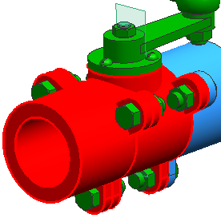
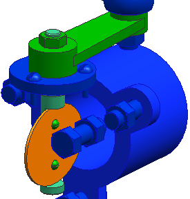
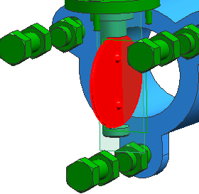

将 des20_valve1_complete_assembly 设为显示及工作部件。
在图形窗口中，选择 des20_valve1_pipe2和 des20_valve1_housing，右击并选择隐藏。


选择分析→高级质量属性→高级重量管理。
在重量管理对话框中的计算组下，点击选定的部件。
在选择组件对话框中，按住 Ctrl 并选择 DES20_VALVE1_SHAFT_BOLT 及 DES20_VALVE1_VALVE。
有三个组件在装配导航器和图形窗口中被选中。

点击确定。
您已经为 des20_valve1_shaft 缓存了重量属性，它和des20_valve1_subassy_intprts 中的两个组件，将在任何随后进行的包含这些组件的分析中依次被使用。
关闭信息窗口并点击取消。
在装配导航器中的重量状态和重量 (lb) 列下查看信息。
关闭所有部件。